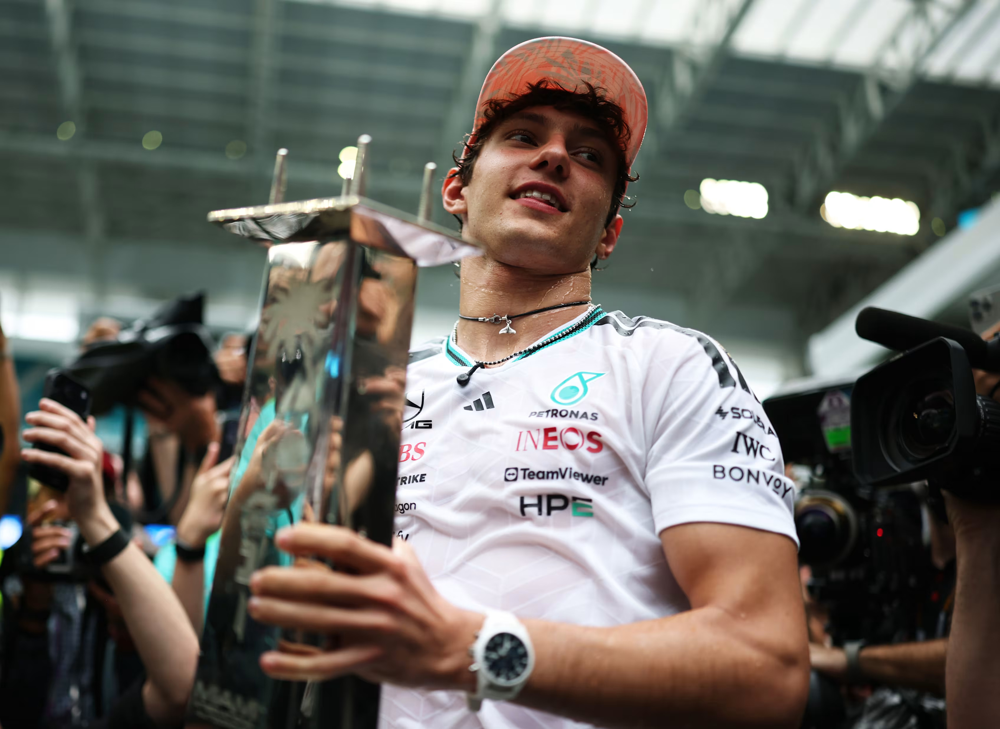
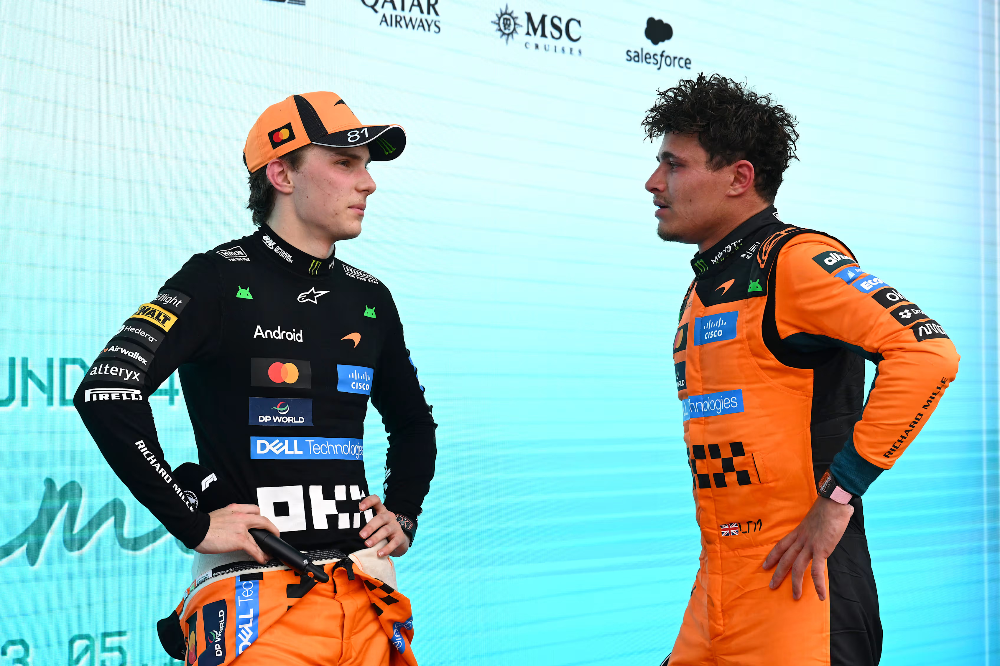
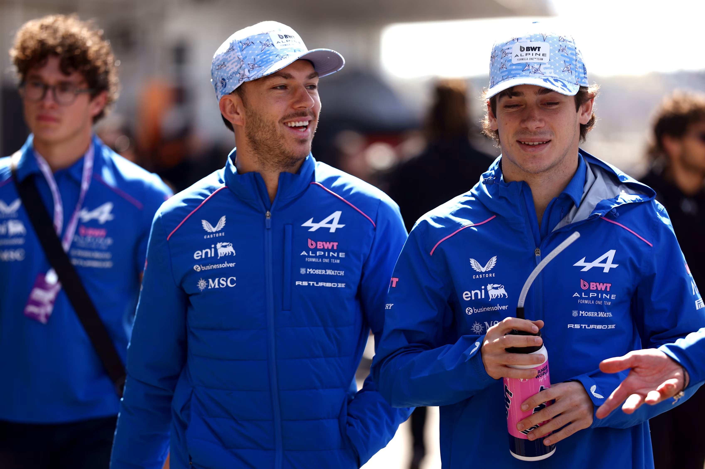
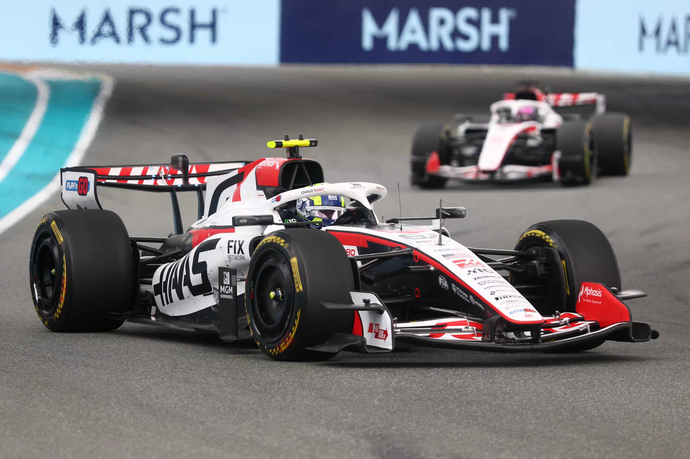
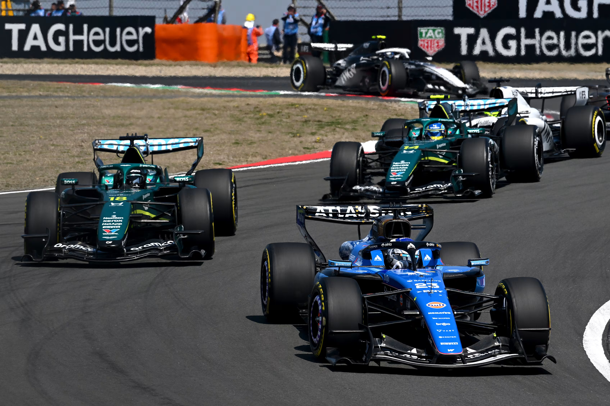

Nyheter
How different do the Teams’ Championship standings look after the first four rounds?
The Teams’ Championship standings have seen further developments following an action-packed Miami Grand Prix weekend, one in which Kimi Antonelli came out on top amid a competitive field to score his third consecutive victory.

Indeed, a quick look at how the order stood at the end of 2025 highlights just how much has changed during the first four rounds of the current campaign, from the shifting positions of the top four through to some dramatic leaps – and falls – in the midfield. Let’s take a deep dive into the key differences between the 2026 Teams’ Championship so far and the final order just five months ago…
Mercedes topple McLaren as the new leaders
Perhaps the most obvious change is that a new name heads the standings, with Mercedes taking over at the top – and while it might only be one step up from their 2025 finishing position of second, moving into P1 is arguably the most crucial step of all.
The Silver Arrows have racked up a tally of 180 points, having achieved wins at all four rounds so far courtesy of George Russell’s triumph in Australia followed by three on the bounce for Antonelli (who has also become the sport’s youngest-ever leader in the Drivers’ Championship).

This performance has given the squad a 70-point lead over closest challengers Ferrari (more on whom shortly), with last year’s champions McLaren now down to third on 94 points. It was not the easiest start for the papaya outfit, marking quite a contrast from the dominance in 2025 that saw them wrap up their second consecutive Teams’ crown with six rounds to spare.
However, signs of promise emerged in Japan and Miami; Oscar Piastri found himself in contention for the win at the former, while Lando Norris battled for victory at the latter as well as returning to the top step in Saturday’s Sprint.
All of which hints that there could be more to come from McLaren, as might be the case for their rivals in the top four…

Ferrari go up and Red Bull slip back
While McLaren have dropped two positions, Ferrari have gained two. The Scuderia slipped to fourth at the end of 2025 – their lowest position since 2020 – and were amongst those to switch their focus to preparing for 2026 at an early stage in last year’s campaign.
That decision looks to have paid off, with Ferrari climbing up to P2 following podium finishes across the opening three rounds. However, the outfit faced what boss Fred Vasseur labelled as a “mega tough” Sunday in Miami, a day in which Charles Leclerc also dropped from sixth to eighth post-race due to a penalty.
This suggests that the Scuderia could potentially have their work cut out when it comes to holding onto that P2, what with McLaren’s good showing as well as a much stronger weekend for Max Verstappen in Miami.
Which brings us onto another big change at the top of the standings – that being Red Bull’s drop from third to fourth since the end of 2025. In perhaps an opposite case to Ferrari, the Milton Keynes-based squad continued to focus on last year’s campaign through to the end, with Verstappen remaining in the fight for the Drivers' title.
The start of 2026 proved challenging for the team, leaving them down in P6 following Round 3 in Japan. However, significant upgrades in Miami appeared to reap rewards as Verstappen moved closer to the front of the pack, leaving him to suggest that there was “light at the end of the tunnel” going forward.
Alpine the biggest climbers
The greatest leap in the early stages of 2026 has been achieved by Alpine, who ended 2025 at the bottom of the pack with just 22 points to their name – bringing to a close a difficult year for the Enstone-based outfit.
The team have certainly found themselves in a much stronger position so far, climbing an impressive five positions to hold the ‘best of the rest’ slot in fifth – and their current total of 23 points is already more than their entire points score from 2025.
Pierre Gasly has had a particularly eye-catching run across the opening rounds, having been responsible for 16 of Alpine’s points tally, while team mate Franco Colapinto is also enjoying better fortunes this year, claiming P7 in Miami to equal his best-ever finish in F1.
Bearing in mind that the total could potentially have been higher had it not been for Gasly’s early crash out of Sunday’s race, it marks a very noteworthy turnaround for the team within the space of a few months.

Haas make gains
Prior to the 2026 season getting underway, Haas were tipped by many as ones to watch in the midfield battle alongside the likes of Alpine.
The campaign has indeed started well for the American squad, who ended 2025 in eighth but are now holding P6 in the standings – and were even placed as high as fourth after the Japanese Grand Prix.
Given that the team continued to bring upgrades until the latter stages of last season, their performance this time around is all the more impressive. Ollie Bearman has also caught the eye on the driver front, delivering several solid results including a P5 in China.
Miami was not such a strong outing for Haas, marking the first weekend so far in which the squad have failed to score points. Similarly, Racing Bulls – another midfield outfit that had enjoyed a good start and now sit just behind Haas in P7 – also faced their first point-less event of 2026.
This all suggests that there could be plenty to keep an eye on as the midfield battle unfolds going forward.

Williams and Aston Martin both lose out
When it comes to those that have made the biggest losses across the opening four rounds of 2026, Williams and Aston Martin are the two main candidates.
The 2025 season had been Williams’ strongest in some time, having claimed an assured fifth in the Teams’ Championship to mark their best finish since 2017. This ascent also saw them collect two podiums along the way via P3 results for Carlos Sainz in Azerbaijan and Qatar.
But things got off to a challenging start for the Grove-based outfit in 2026 when they were forced to miss the Barcelona Shakedown, while the fact that their car arrived overweight into the campaign cost them time once the season got underway – and with only five points so far, they have dropped down to eighth in the standings.
Aston Martin have also experienced multiple issues so far, including vibrations from their Honda engine and reliability problems. The green-liveried team are yet to score a point and were not classified as finishing a race until Fernando Alonso’s P18 in Japan, meaning that they sit 11th and last in the Teams’ Championship.

However, with both Alonso and Lance Stroll seeing the chequered flag last time out in Miami, the squad will be hoping to build on this improved reliability and start to work on their pace.
In-between Williams and Aston Martin, meanwhile, are Audi and Cadillac, with the former holding P9 – where the former Kick Sauber operation ended 2025 – while the latter outfit are keeping their expectations modest for their debut campaign.